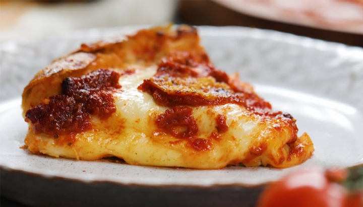

Principales
Pizza sin amasar
¿Tenés ganas de una buena pizza, pero no de amasar? Hagamos esta masa fácil y con pocos ingredientes.
Ingredientes
- 1 kg de harina 000
- 700 cc de agua
- 25 gr de levadura fresca o 10 gr de levadura seca
- 10 gr de sal
- 4 cucharadas de aceite
Paso a paso
- Colocar en un recipiente la harina y rociar con 4 cucharadas de aceite.
- En otro recipiente, mezclar el agua tibia, la levadura y dos cucharadas de harina.
- Integrar ambas mezclas. Solo mezclar, ¡NO amasar!
- Tapar y dejar reposar 30 minutos.
- Colocar en un vaso dos dedos de agua y los 10 gr de sal (aproximadamente una cucharada de postre) y dejar que se disuelva.
- Volver a la masa, ahora leudada, y sumar el agua con sal, reservando un poco. Integrar tomando la masa de los bordes hacia el centro, como pliegues.
- Volver a tapar y dejar reposar otros 30 o 40 minutos.
- Plegar nuevamente de la misma manera, usando el agua restante para humedecernos las manos y no se nos pegue la masa.
- Tapar y llevar a la heladera hasta el otro día.
- Pasado el tiempo de descanso en la heladera, espolvorear harina en la mesada y volcar la masa. Porcionar en 4 o 6 bollos y dejar descansar 20 a 30 minutos.
- Colocar el bollo en una asadera con aceite, estirando con las yemas de los dedos desde el centro hacia a fuera hasta llegar al tamaño deseado.
- Sumar los toppings que más te gusten y cocinar en horno fuerte, en el piso, por 20 minutos, y luego en el estante del medio por 10 a 15 minutos más. Controlar cada 5-10 minutos, ¡no todos los hornos son iguales!
Y si la receta no es suficiente... Te dejo el tutorial
¡Tip!
Podes hacer pre pizzas y freezarlas. ¡Duran hasta 6 meses en el freezer!